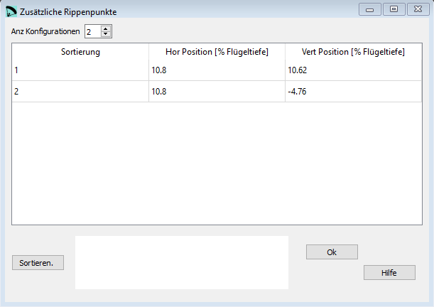

Zusätzliche Rippenpunkte¶
Mit diesen Einstellungen können zusätzliche Markierungspunkte auf die Rippen platziert werden. Typischerweise um Verstärkungen oder Stäbchen zu positionieren.
{kind=link}
Rohdaten:
*****************************************************
* 17. Aditional rib points
*****************************************************
2
10.8 10.62
10.8 -4.76
Anz Konfigurationen¶
Zusätzliche Rippenpunkte ist eine optionale Konfiguration.
Wenn Du diese Einstellungen nicht verwenden möchtest, dann setze den Wert von Anz Konfigurationen auf 0.
Hor Position¶
Horizontale Position der Markierung in [% Flügeltiefe].
Vert Position¶
Vertikale Position der Markierung in [% Profiltiefe].
Sortieren¶
Mit der Schaltfläche Sortieren können die Zeilen neu angeordnet werden. Wenn das gemacht werden soll kannst Du die neuen Nummern in der ersten Spalte einsetzten und anschliessend mit der Schaltfläche die Tabelle neu sortieren.
Eine detaillierte Beschreibung in englisch findest Du auf der Laboratori d'envol website.